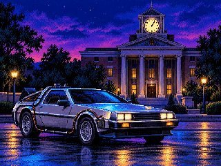

01 · DeLorean BACK · Hill Valley
BACK TO
BACK TO
THE FUTURE
Travel through Hill Valley in the DeLorean BACK. Custom scenery, animated titles, film-inspired music and the iconic departure quote bring Back to the Future into Stunts. Includes the complete Windows installer and uninstaller.
DeLorean BACKHill Valley trackIntro & music
Version 1.0.3 · 242.4 KB · Windows
Install & restore Windows
Extract BACK_TO_THE_FUTURE_STUNTS into your Stunts folder. Run INSTALLER.bat in Windows. To restore your previous files, run DESINSTALLER.bat.
Requires your own Stunts 1.1. Keep the original backup until the mod is uninstalled.

VGA ARTWORK · 320 × 240